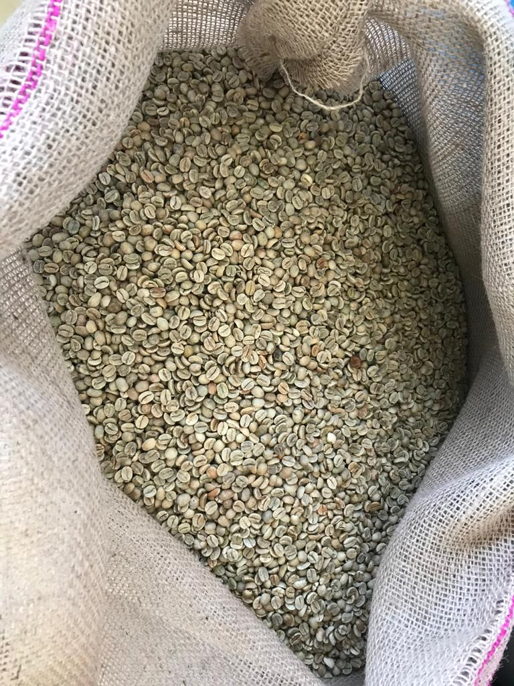
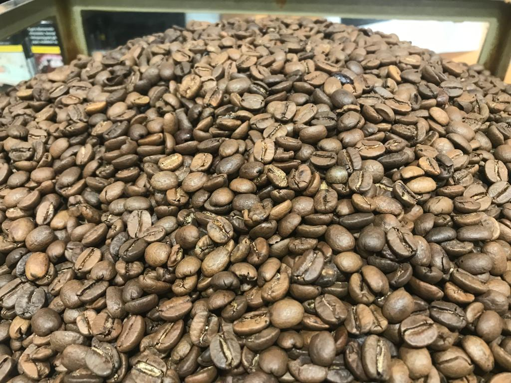
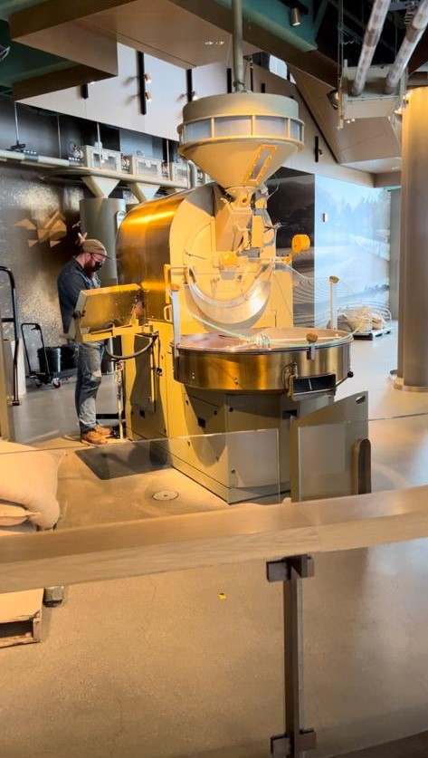

Coffee is the second most consumed beverage in the entire world, right after water. Most people start there with a cup of coffee right after they wake up. Coffee is the foundation of a productive life for us. But what is coffee, and how does it come to our house? Coffee comes from the bean of coffea tree fruits, which are harvested during the harvesting season, and using various methods, the fruit and beans are separated from each other. After these beans dried, they were packed as 60 kg sacks and shipped worldwide to become coffee.

Raw coffee beans are not drinkable at the moment, and they have to be roasted. Industrial coffee roastery machines are used to roast raw coffee beans. When the beans are roasted at the desired level of color, they are taken into the cool-down process. Ideally, the highest aromatic values from the coffee beans occur 14 days after roasting, but the important part is that coffee must be isolated from the air since air starts the oxidation reaction and causes coffee beans to lose these aromatic tastes.


After 14 days of rest, roasted beans are combined with other regions coffee beans to get the aimed aromatic values, or they have been used directly without the combination of other beans, as the customers expect roasted coffee beans to be packed as beans or ground. These packs ship to take place in the shelves of the markets and reach out to our house for a delicious morning coffee.
How to Roast Coffee?
Mehmet Efe Caylan
Coffee roasting is an essential part of producing high-quality coffee. A perfect roasting can make a low-quality coffee acceptable or destroy the highest quality coffee beans as they can’t be drinkable after all. There are several important things to consider during coffee roasting: temperature, temperature curve, and color.
Roasting temperature is a key part of maintaining a sustainable quality of coffee. During the roasting process, we always keep track of the temperature using electronic devices or using manual thermometers to understand which part of the cycle we are in.
Temperature curves consist of the continuous track of temperature. There are two important points that we need to be aware of. Coffee beans have two crack points; the first crack happens around 190 degrees Celsius, and the second one around 220 degrees Celsius. The crack point is the indication that coffee beans are expanding and the level of water is decreasing at the moment. The reason we follow temperature to keep track of these crack points is if the crack point is exceeded without the desired amount of cracks, our coffee bean won’t be able to create an enriched flavor profile. Besides that, the temperature shows us the roasting level, such as dark, medium, or light roast.
The color is the last and another important factor we must watch. The color of coffee beans starts to change rapidly after a certain level of temperature is exceeded; thus, if we aim to roast a medium roast coffee, we should put the color as the number one priority to decide if this coffee is medium roasted or not than temperature.